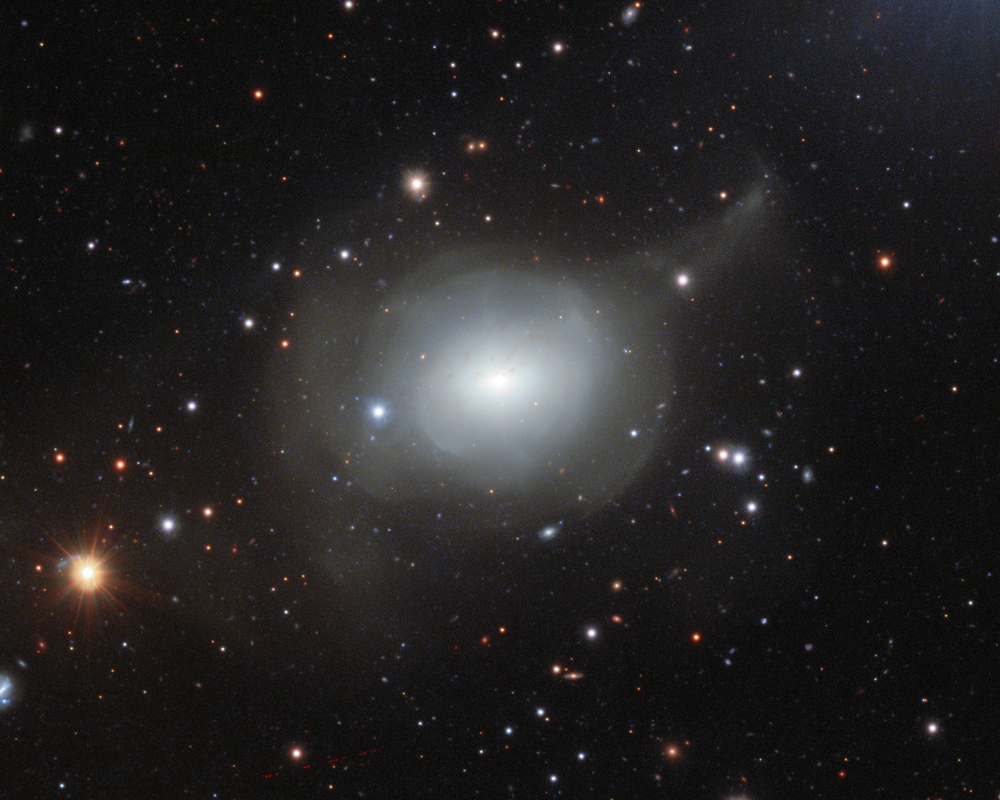
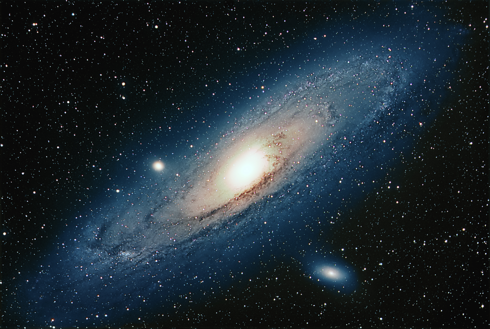

Come vengono categorizzate?
Le galassie sono state categorizzate secondo la loro forma apparente in tre tipologie principali: ellittiche, a spirale, e irregolari (o peculiari).



Le galassie sono state categorizzate secondo la loro forma apparente in tre tipologie principali: ellittiche, a spirale, e irregolari (o peculiari).